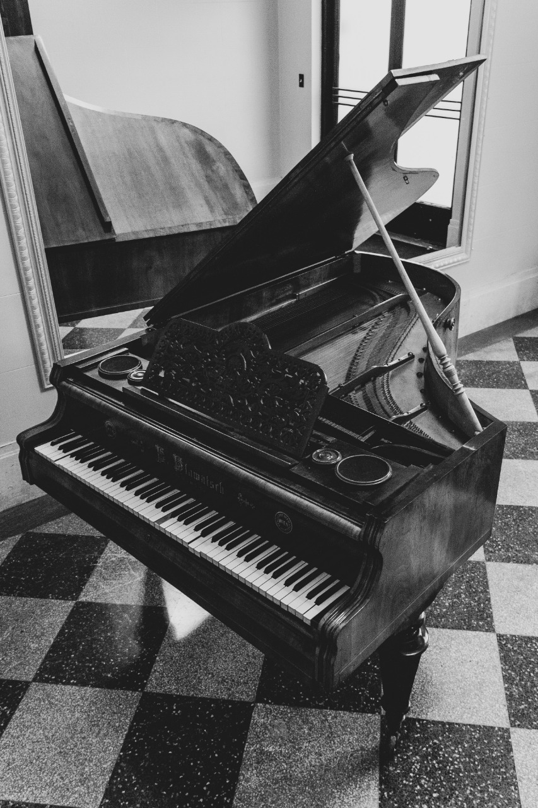

Piano
The Piano is a keyboard instrument that produces sound by striking strings with hammers, characterized by its large range and ability to play chords freely. It is a musical instrument that has broad appeal.Instruments can be divided into three categories based on how they produce sounds.
Those categories are string instruments, wind instruments, and percussion instruments. The piano's ancestry can be traced back through various instruments such as the clavichord, harpsichord, and dulcimer.
The piano keyboard layout consists of a regular arrangement of white keys and black keys.
The piano produces sounds by channeling the power of the fingers pressing the keys into the hammers, which strike the strings.Digital pianos made by Yamaha are equipped with hammers, though.
These are not for the purpose of striking the strings. In an acoustic piano, the tone varies infinitely according to the pianist's touch. It is an instrument that can bring out emotions by playing musical pieces with great expressiveness.At the same time, advances in technology have made it possible for digital pianos to reproduce sounds very close to those of an acoustic piano, and even the feel of the keyboard can be closely simulated by various mechanisms.